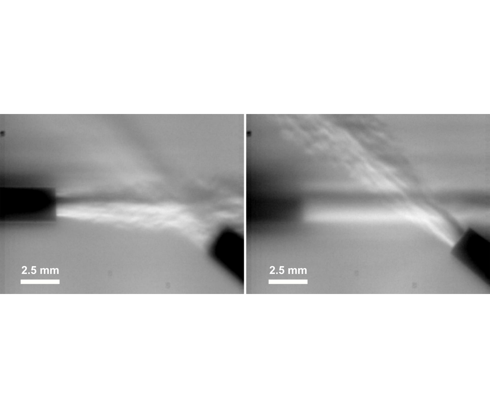

J. W. Hofferth, R. A. Humble, D. Floryan, and W. S. Saric, AIAA Paper 2013-0378
doi: 10.2514/6.2013-378
The focusing schlieren technique is a non-intrusive optical technique that visualizes density gradients in a narrow depth of field. The plane of focus changes by 10 mm in the two images. We used such a system to make unprecedented measurements of transition to turbulence in a hypersonic boundary layer. This laid the groundwork for a later study.
Focused schlieren is used in combination with a small-diameter fiber optic and avalanche photodetector to measure second-mode instabilities on a Mach 6 flared-cone model, within the unit Reynolds number range 7.8 to 11.0×106 m-1. The second-mode instability is readily observed at f0 ~ O(250 kHz), as is harmonic content at 2f0 and 3f0. A bispectral analysis shows that after sufficient amplification of the second mode, several nonlinear mechanisms become significant. A self-excited nonlinear interaction of the second mode takes place, resulting in an energy transfer to generate higher harmonics. A variety of nonlinear interactions occur, including ones involving 3f0, which have not hitherto been reported in the literature. With increasing Reynolds number, phase-coupled interactions are found to be increasingly intermittent, and there is a significant amplitude modulation of the second-mode disturbance at frequencies significantly lower than f0. At a freestream unit Reynolds number coinciding with the loss of the tunnel's quiet-flow environment, the redistribution of the available energy in the interacting modes eventually involves frequency components throughout much of the spectrum, and there is a filling in of the valleys in between the spectral peaks as the cone boundary layer becomes intermittently turbulent. A parametric study is considered in order to determine the sensitivity of f0 to small angles-of-attack of the test article about 0° and provides a convenient measure of angle misalignment for numerical simulations.